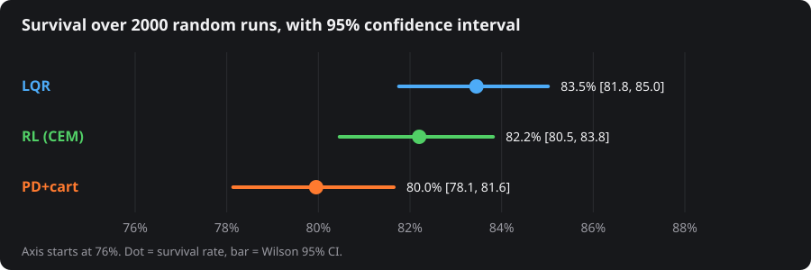

Results
2000 randomised runs, identical scenarios and noise for all three controllers.

| PD+cart | LQR | RL (CEM) | |
| Survived, 2000 runs | 80.0 % | 83.5 % | 82.2 % |
| 95% CI (Wilson) | 78.1–81.6 | 81.8–85.0 | 80.5–83.8 |
| RMS angle of survivors | 4.07° | 3.85° | 3.43° |
| Settling, 0.2 rad tilt | 0.87 s | 0.96 s | 0.94 s |
| Control effort ∫F² dt | 10.1 N²·s | 10.9 N²·s | 21.7 N²·s |
The three survival rates are within 3.5 points of each other and the LQR and RL intervals overlap, so this sweep supports "all three are similar, PD+cart is a little worse", not a clear winner. On the same scenarios, LQR survived 28 runs that RL lost while RL survived 3 that LQR lost; PD+cart lost 71 and 47 runs that LQR and RL held. The few runs where outcomes differ are the Hard case button on the live page.
How it works
| Plant | Cart 1.0 kg, uniform pole 0.25 kg × 0.6 m, cart friction 0.2 N·s/m, pivot friction 0.003 N·m·s, force limit ±15 N, rail ±1.2 m. Lagrange equations: (M+m)ẍ + ml cosθ θ̈ − ml sinθ θ̇² = F − bẋ + Fd ml cosθ ẍ + (J+ml²) θ̈ − mgl sinθ = −cθ̇ + 2l cosθ Fd (θ = 0 upright, J = m(2l)²/12, Fd = push at the tip). RK4, 2 substeps per 10 ms control period. |
|---|---|
| Sensing | Every controller sees noisy angle and cart position at 100 Hz; velocities come from a filtered finite difference. |
| PD + cart loop | F = Kpθ + Kdθ̇ + Kxx + Kvẋ with Kp 68.0, Kd 11.1, Kx 10.7, Kv 11.5 (Ki ≈ 0). This is a four-gain state feedback, the same structure as LQR, not a cascaded PID. The gains came from Nelder–Mead on the nominal step response and land close to the LQR gains, which is why the two behave alike. |
| LQR | Linearised about upright, zero-order-hold discretised, discrete Riccati equation (scipy), Q = diag(10, 1, 100, 1), R = 0.05: F = 12.6x + 14.3ẋ + 83.1θ + 14.7θ̇. The live page re-derives the gain with its own Riccati iteration and matches scipy to 5×10⁻¹¹. |
| RL | 4-16-1 tanh MLP trained with the cross-entropy method (64 candidates, 8 elites, 120 generations). Training randomised pole mass ×0.5–2, length ×0.7–1.5, noise and pushes, so mass ×2–3 in the sweep is outside its training range. |
| Swing-up | One shared energy-pumping law for all three, handed to the balance controller once |θ| < 0.35 rad. The panels therefore look alike during swing-up; the controllers differ only in balancing. |
| Sweep | Pole mass ×0.5–3, length ×0.6–1.6, start tilt ±0.25 rad, sensor noise σ = 0.01 rad, a 1–2.5 N tip push for 0.1 s at t = 2 s, 6 s per run. A run fails if the pole passes 0.8 rad or the cart leaves the ±1.2 m rail. 95% intervals are Wilson score intervals; the paired counts above use an exact sign test on runs where the two controllers differ (all p < 10⁻⁵, uncorrected). Numbers: results.json. |
| Cross-check | The browser simulator is a line-for-line port of the Python one. On load it replays four reference runs (largest difference 3×10⁻¹⁶ rad) and the Python fall/hold outcome of every hard case. |